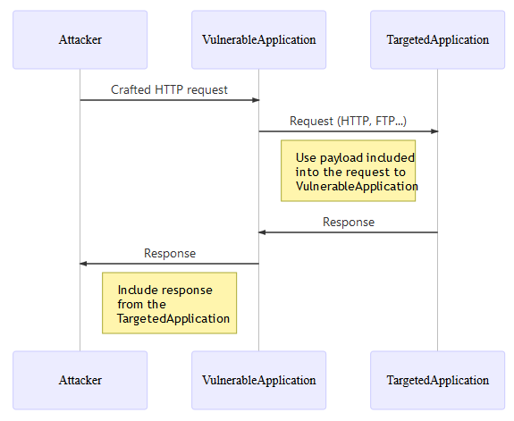
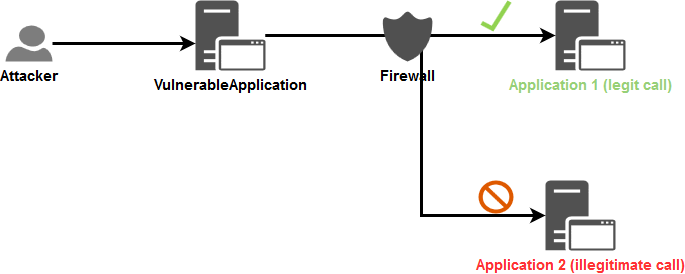

Server-Side Request Forgery Prevention Cheat Sheet¶
Введение¶
Цель данного руководства — предоставить рекомендации по защите от атак типа Server Side Request Forgery (SSRF).
Данное руководство сосредоточено на точке зрения защиты и не описывает методы выполнения этой атаки. Этот доклад исследователя безопасности Orange Tsai, а также этот документ описывают техники выполнения подобных атак.
Контекст¶
SSRF — это вектор атаки, злоупотребляющий приложением для взаимодействия с внутренней/внешней сетью или самой машиной. Одним из факторов, способствующих этому вектору, является некорректная обработка URL, что демонстрируется в следующих примерах:
- Изображение на внешнем сервере (например, пользователь указывает URL своего аватара, который приложение скачивает и использует).
- Пользовательский WebHook (пользователи должны указать обработчики Webhook или URL обратного вызова).
- Внутренние запросы для взаимодействия с другим сервисом в целях выполнения определённой функциональности. Зачастую вместе с запросом передаются пользовательские данные для обработки, и при ненадлежащей обработке это может привести к специфическим атакам через инъекции.
Обзор типичного потока SSRF-атаки¶

Примечания:
- SSRF не ограничивается протоколом HTTP. Как правило, первый запрос выполняется по HTTP, но в случаях, когда само приложение выполняет второй запрос, могут использоваться другие протоколы (например, FTP, SMB, SMTP и т.д.) и схемы (например,
file://,phar://,gopher://,data://,dict://и т.д.). - Если приложение уязвимо к XML eXternal Entity (XXE) injection, это может быть использовано для выполнения SSRF-атаки. Ознакомьтесь с руководством по XXE, чтобы узнать, как предотвратить уязвимости к XXE.
Сценарии¶
В зависимости от функциональности и требований приложения существуют два основных сценария, при которых может произойти SSRF:
- Приложение может отправлять запросы только идентифицированным и доверенным приложениям: случай, когда доступен подход на основе списка разрешённых (allowlist).
- Приложение может отправлять запросы на любой внешний IP-адрес или доменное имя: случай, когда подход на основе списка разрешённых недоступен.
Поскольку эти два сценария очень различаются, данное руководство описывает защиту от каждого из них отдельно.
Сценарий 1 — Приложение может отправлять запросы только идентифицированным и доверенным приложениям¶
Иногда приложению необходимо выполнить запрос к другому приложению, зачастую расположенному в другой сети, для выполнения определённой задачи. В зависимости от бизнес-требований для работы функциональности может потребоваться ввод от пользователя.
Пример¶
Рассмотрим веб-приложение, которое получает и использует персональные данные пользователя (имя, фамилию, дату рождения и т.д.) для создания профиля во внутренней HR-системе. По своей архитектуре это веб-приложение должно взаимодействовать с HR-системой по понятному ей протоколу для обработки этих данных. По сути, пользователь не может напрямую обратиться к HR-системе, однако если веб-приложение, принимающее данные пользователя, уязвимо к SSRF, пользователь может воспользоваться этим для доступа к HR-системе. Пользователь использует веб-приложение как прокси для доступа к HR-системе.
Подход на основе списка разрешённых является жизнеспособным решением, поскольку внутреннее приложение, вызываемое VulnerableApplication, чётко идентифицировано в техническом/бизнес-потоке. Можно утверждать, что необходимые обращения будут направлены только между этими идентифицированными и доверенными приложениями.
Доступные меры защиты¶
На уровнях Приложения и Сети возможно несколько защитных мер. Для применения принципа эшелонированной защиты оба уровня будут защищены от подобных атак.
Уровень приложения¶
Первый уровень защиты, который приходит на ум, — это валидация входных данных.
Исходя из этого, возникает вопрос: Как выполнять эту валидацию входных данных?
Как показывает Orange Tsai в своём докладе, в зависимости от используемого языка программирования парсеры могут быть взломаны. Одной из возможных контрмер является применение подхода на основе списка разрешённых при валидации входных данных, поскольку в большинстве случаев формат ожидаемой от пользователя информации известен заранее.
Запрос, отправляемый во внутреннее приложение, будет основан на следующей информации:
- Строка с бизнес-данными.
- IP-адрес (V4 или V6).
- Доменное имя.
- URL.
Примечание: Отключите поддержку перенаправлений в вашем веб-клиенте, чтобы предотвратить обход валидации входных данных, описанный в разделе Exploitation tricks > Bypassing restrictions > Input validation > Unsafe redirect данного документа.
Строка¶
В контексте SSRF можно добавить проверки, гарантирующие, что входная строка соответствует ожидаемому бизнес-/техническому формату.
Для проверки корректности получаемых данных с точки зрения безопасности можно использовать регулярные выражения, если входные данные имеют простой формат (например, токен, почтовый индекс и т.д.). В противном случае валидацию следует выполнять с помощью библиотек, доступных в объекте string, поскольку регулярные выражения для сложных форматов трудно поддерживать и они подвержены ошибкам.
Предполагается, что ввод пользователя не связан с сетью и содержит персональные данные пользователя.
Пример:
//Regex validation for a data having a simple format
if(Pattern.matches("[a-zA-Z0-9\\s\\-]{1,50}", userInput)){
//Continue the processing because the input data is valid
}else{
//Stop the processing and reject the request
}
IP-адрес¶
В контексте SSRF необходимо выполнить 2 возможные проверки:
- Убедиться, что предоставленные данные являются корректным IP-адресом V4 или V6.
- Убедиться, что предоставленный IP-адрес принадлежит одному из IP-адресов идентифицированных и доверенных приложений.
Первый уровень валидации можно применить с помощью библиотек, обеспечивающих корректность формата IP-адреса в зависимости от используемой технологии (использование библиотек предлагается здесь для делегирования управления форматом IP-адреса и использования проверенных функций валидации):
Была выполнена проверка предлагаемых библиотек на предмет уязвимости к обходам (Hex, Octal, Dword, URL и Mixed encoding), описанным в данной статье.
- JAVA: Метод InetAddressValidator.isValid из библиотеки Apache Commons Validator.
- НЕ уязвим к обходу с использованием Hex, Octal, Dword, URL и Mixed encoding.
- .NET: Метод IPAddress.TryParse из SDK.
- Уязвим к обходу с использованием Hex, Octal, Dword и Mixed encoding, но НЕ к URL encoding.
- Поскольку здесь используется список разрешённых, любая попытка обхода будет заблокирована при сравнении с разрешённым списком IP-адресов.
- JavaScript: Библиотека ip-address.
- НЕ уязвима к обходу с использованием Hex, Octal, Dword, URL и Mixed encoding.
- Ruby: Класс IPAddr из SDK.
- НЕ уязвим к обходу с использованием Hex, Octal, Dword, URL и Mixed encoding.
Используйте выходное значение метода/библиотеки в качестве IP-адреса для сравнения со списком разрешённых.
После проверки корректности входящего IP-адреса применяется второй уровень валидации. Создаётся список разрешённых, содержащий все IP-адреса (v4 и v6, чтобы избежать обходов) идентифицированных и доверенных приложений. Корректный IP-адрес сверяется с этим списком для подтверждения взаимодействия с внутренним приложением (строгое сравнение строк с учётом регистра).
Доменное имя¶
При попытке проверить доменные имена очевидным решением кажется выполнение DNS-разрешения для подтверждения существования домена. В целом это не плохая идея, однако она открывает приложение для атак в зависимости от конфигурации DNS-серверов, используемых для разрешения доменных имён:
- Это может раскрыть информацию внешним DNS-резолверам.
- Злоумышленник может использовать это для привязки легитимного доменного имени к внутреннему IP-адресу. См. раздел
Exploitation tricks > Bypassing restrictions > Input validation > DNS pinningданного документа. - Злоумышленник может использовать это для доставки вредоносной нагрузки на внутренние DNS-резолверы и API (SDK или сторонние), используемые приложением для обработки DNS-коммуникаций, и потенциально вызвать уязвимость в одном из этих компонентов.
В контексте SSRF необходимо выполнить две проверки:
- Убедиться, что предоставленные данные являются корректным доменным именем.
- Убедиться, что предоставленное доменное имя принадлежит одному из доменных имён идентифицированных и доверенных приложений (здесь вступает в действие список разрешённых).
Аналогично валидации IP-адреса, первый уровень валидации можно применить с помощью библиотек, обеспечивающих корректность формата доменного имени в зависимости от используемой технологии (использование библиотек предлагается здесь для делегирования управления форматом доменного имени и использования проверенных функций валидации):
Была выполнена проверка предлагаемых библиотек для обеспечения того, что предложенные функции не выполняют DNS-запросов на разрешение имён.
- JAVA: Метод DomainValidator.isValid из библиотеки Apache Commons Validator.
- .NET: Метод Uri.CheckHostName из SDK.
- JavaScript: Библиотека is-valid-domain.
- Python: Модуль validators.domain.
- Ruby: Подходящего специализированного gem'а найдено не было.
- Библиотеки domainator, public_suffix и addressable были протестированы, однако, к сожалению, все они считают
<script>alert(1)</script>.owasp.orgкорректным доменным именем. - Можно использовать следующее регулярное выражение, взятое отсюда:
^(((?!-))(xn--|_{1,1})?[a-z0-9-]{0,61}[a-z0-9]{1,1}\.)*(xn--)?([a-z0-9][a-z0-9\-]{0,60}|[a-z0-9-]{1,30}\.[a-z]{2,})$
- Библиотеки domainator, public_suffix и addressable были протестированы, однако, к сожалению, все они считают
Пример выполнения предложенного регулярного выражения для Ruby:
domain_names = ["owasp.org","owasp-test.org","doc-test.owasp.org","doc.owasp.org",
"<script>alert(1)</script>","<script>alert(1)</script>.owasp.org"]
domain_names.each { |domain_name|
if ( domain_name =~ /^(((?!-))(xn--|_{1,1})?[a-z0-9-]{0,61}[a-z0-9]{1,1}\.)*(xn--)?([a-z0-9][a-z0-9\-]{0,60}|[a-z0-9-]{1,30}\.[a-z]{2,})$/ )
puts "[i] #{domain_name} is VALID"
else
puts "[!] #{domain_name} is INVALID"
end
}
$ ruby test.rb
[i] owasp.org is VALID
[i] owasp-test.org is VALID
[i] doc-test.owasp.org is VALID
[i] doc.owasp.org is VALID
[!] <script>alert(1)</script> is INVALID
[!] <script>alert(1)</script>.owasp.org is INVALID
После проверки корректности входящего доменного имени применяется второй уровень валидации:
- Создаётся список разрешённых со всеми доменными именами каждого идентифицированного и доверенного приложения.
- Проверяется, что полученное доменное имя присутствует в этом списке (строгое сравнение строк с учётом регистра).
К сожалению, приложение по-прежнему уязвимо к обходу через DNS pinning, упомянутому в данном документе. Действительно, DNS-разрешение будет выполнено при исполнении бизнес-кода. Для решения этой проблемы в дополнение к валидации доменного имени необходимо предпринять следующие действия:
- Убедиться, что домены вашей организации разрешаются сначала вашим внутренним DNS-сервером в цепочке DNS-резолверов.
- Мониторинг списка разрешённых доменов для обнаружения случаев, когда любой из них разрешается в: - Локальный IP-адрес (V4 + V6). - Внутренний IP вашей организации (ожидается в диапазонах приватных IP) для доменов, не принадлежащих вашей организации.
Следующий скрипт на Python3 можно использовать в качестве отправной точки для описанного выше мониторинга:
# Dependencies: pip install ipaddress dnspython
import ipaddress
import dns.resolver
# Configure the allowlist to check
DOMAINS_ALLOWLIST = ["owasp.org", "labslinux"]
# Configure the DNS resolver to use for all DNS queries
DNS_RESOLVER = dns.resolver.Resolver()
DNS_RESOLVER.nameservers = ["1.1.1.1"]
def verify_dns_records(domain, records, type):
"""
Verify if one of the DNS records resolve to a non public IP address.
Return a boolean indicating if any error has been detected.
"""
error_detected = False
if records is not None:
for record in records:
value = record.to_text().strip()
try:
ip = ipaddress.ip_address(value)
# See https://docs.python.org/3/library/ipaddress.html#ipaddress.IPv4Address.is_global
if not ip.is_global:
print("[!] DNS record type '%s' for domain name '%s' resolve to
a non public IP address '%s'!" % (type, domain, value))
error_detected = True
except ValueError:
error_detected = True
print("[!] '%s' is not valid IP address!" % value)
return error_detected
def check():
"""
Perform the check of the allowlist of domains.
Return a boolean indicating if any error has been detected.
"""
error_detected = False
for domain in DOMAINS_ALLOWLIST:
# Get the IPs of the current domain
# See https://en.wikipedia.org/wiki/List_of_DNS_record_types
try:
# A = IPv4 address record
ip_v4_records = DNS_RESOLVER.query(domain, "A")
except Exception as e:
ip_v4_records = None
print("[i] Cannot get A record for domain '%s': %s\n" % (domain,e))
try:
# AAAA = IPv6 address record
ip_v6_records = DNS_RESOLVER.query(domain, "AAAA")
except Exception as e:
ip_v6_records = None
print("[i] Cannot get AAAA record for domain '%s': %s\n" % (domain,e))
# Verify the IPs obtained
if verify_dns_records(domain, ip_v4_records, "A")
or verify_dns_records(domain, ip_v6_records, "AAAA"):
error_detected = True
return error_detected
if __name__== "__main__":
if check():
exit(1)
else:
exit(0)
URL¶
Не принимайте полные URL от пользователя, поскольку URL сложно проверить, а парсер может быть взломан в зависимости от используемой технологии, что демонстрируется в следующем докладе Orange Tsai.
Если информация, связанная с сетью, действительно необходима, принимайте только корректный IP-адрес или доменное имя.
Сетевой уровень¶
Цель защиты на уровне сети — предотвратить выполнение VulnerableApplication запросов к произвольным приложениям. Для этого приложению будут доступны только разрешённые маршруты, ограничивающие его сетевой доступ только теми приложениями, с которыми оно должно взаимодействовать.
Компонент Firewall — в виде отдельного устройства или встроенный в операционную систему — будет использован здесь для определения легитимных потоков.
На приведённой ниже схеме компонент Firewall используется для ограничения доступа приложения и, как следствие, снижения воздействия уязвимого к SSRF приложения:

Сегрегация сети (см. также набор рекомендаций по реализации) также может быть применена и настоятельно рекомендуется для блокировки нелегитимных обращений непосредственно на сетевом уровне.
Сценарий 2 — Приложение может отправлять запросы на любой внешний IP-адрес или доменное имя¶
Этот сценарий возникает, когда пользователь может управлять URL внешнего ресурса и приложение выполняет запрос по этому URL (например, в случае WebHooks). Списки разрешённых здесь неприменимы, поскольку список IP-адресов/доменов часто неизвестен заранее и динамически изменяется.
В данном сценарии внешний означает любой IP-адрес, не принадлежащий внутренней сети и доступный через публичный интернет.
Таким образом, вызов от Vulnerable Application:
- НЕ направлен на IP-адрес/домен, находящийся внутри глобальной сети компании.
- Использует соглашение, определённое между VulnerableApplication и ожидаемым IP-адресом/доменом, для подтверждения того, что вызов был инициирован законным образом.
Сложности блокировки URL на уровне приложения¶
Исходя из бизнес-требований упомянутых выше приложений, подход на основе списка разрешённых не является допустимым решением. Несмотря на то что подход на основе списка запрещённых не является непреодолимым барьером, он является наилучшим решением в данном сценарии. Он информирует приложение о том, что оно не должно делать.
Вот почему фильтрация URL на уровне приложения затруднена:
- Это означает, что приложение должно уметь обнаруживать на уровне кода, что предоставленный IP-адрес (V4 + V6) не входит в официальные диапазоны частных сетей, включая localhost и адреса IPv4/v6 Link-Local. Не каждый SDK предоставляет встроенную функцию для такой проверки, оставляя разработчику задачу разобраться во всех нюансах и возможных значениях, что является трудоёмкой задачей.
- То же относится к доменным именам: компания должна поддерживать список всех внутренних доменных имён и предоставить централизованный сервис, позволяющий приложению проверять, является ли предоставленное доменное имя внутренним. Для этой проверки приложение может запрашивать внутренний DNS-резолвер, который не должен разрешать внешние доменные имена.
Доступные меры защиты¶
При рассмотрении следующих разделов используются те же допущения, что и в следующем примере.
Уровень приложения¶
Как и в сценарии №1, предполагается, что для формирования запроса к TargetApplication необходим IP-адрес или доменное имя.
Первая валидация входных данных, описанная в сценарии №1 для 3 типов данных, будет аналогична данному случаю НО вторая валидация будет отличаться. Здесь необходимо использовать подход на основе списка запрещённых.
Относительно подтверждения легитимности запроса: TargetedApplication, которое получит запрос, должно генерировать случайный токен (например, 20 буквенно-цифровых символов), который ожидается от вызывающей стороны (в теле запроса через параметр, имя которого также определяется самим приложением и допускает только символы набора
[a-z]{1,10}) для выполнения корректного запроса. Принимающий эндпоинт должен принимать только HTTP POST-запросы.
Поток валидации (если один из шагов валидации завершается неудачей, запрос отклоняется):
- Приложение получает IP-адрес или доменное имя TargetedApplication и применяет первую валидацию входных данных с использованием библиотек/регулярных выражений, упомянутых в данном разделе.
- Вторая валидация применяется к IP-адресу или доменному имени TargetedApplication с использованием следующего подхода на основе списка запрещённых:
- Для IP-адреса:
- Приложение проверяет, является ли он публичным (см. подсказку в следующем абзаце с примером кода на Python).
- Для доменного имени:
- Приложение проверяет, является ли оно публичным, пытаясь разрешить доменное имя через DNS-резолвер, который разрешает только внутренние доменные имена. В данном случае он должен возвращать ответ, указывающий, что домен ему неизвестен, поскольку ожидаемое значение должно быть публичным доменом.
- Для предотвращения атаки
DNS pinning, описанной в данном документе, приложение получает все IP-адреса, стоящие за предоставленным доменным именем (записи A + AAAA для IPv4 + IPv6), и применяет к ним ту же проверку, описанную в предыдущем пункте об IP-адресах.
- Приложение получает используемый протокол через отдельный входной параметр, значение которого проверяется по списку разрешённых протоколов (
HTTPилиHTTPS). - Приложение получает имя параметра для передачи токена в TargetedApplication через отдельный входной параметр, допускающий только символы набора
[a-z]{1,10}. - Приложение получает сам токен через отдельный входной параметр, допускающий только символы набора
[a-zA-Z0-9]{20}. - Приложение получает и валидирует (с точки зрения безопасности) любые бизнес-данные, необходимые для выполнения корректного вызова.
- Приложение формирует HTTP POST-запрос только из проверенных данных и отправляет его (не забудьте отключить поддержку перенаправлений в используемом веб-клиенте).
Сетевой уровень¶
Аналогично следующему разделу.
IMDSv2 в AWS¶
В облачных средах SSRF зачастую используется для доступа к метаданным сервисов (например, AWS Instance Metadata Service, Azure Instance Metadata Service, GCP metadata server) и кражи учётных данных и токенов доступа.
IMDSv2 — это дополнительный механизм эшелонированной защиты для AWS, снижающий часть векторов SSRF-атак.
Для использования этой защиты перейдите на IMDSv2 и отключите старый IMDSv1. Подробнее см. в документации AWS.
Список запрещённых (крайняя мера)¶
Списки запрещённых подвержены обходам. Предпочтительнее использовать списки разрешённых.
Если применение списков запрещённых неизбежно, блокируйте как минимум следующие диапазоны:
| Сервис | Блокируемые IP/домены |
|---|---|
| AWS IMDS | 169.254.169.254, metadata.amazonaws.com |
| GCP Metadata | metadata.google.internal, 169.254.169.254 |
| Azure IMDS | 169.254.169.254 |
| Localhost | 127.0.0.0/8, 0.0.0.0/8, ::1/128 |
| RFC1918 Private | 10.0.0.0/8, 172.16.0.0/12, 192.168.0.0/16 |
| Multicast | 224.0.0.0/4, ff00::/8 |
Полный пример для production: ComputerCraft SSRF deny-list
Источники:
Правила Semgrep¶
Semgrep — это инструмент командной строки для офлайн-статического анализа. Используйте готовые или пользовательские правила для соблюдения стандартов кода и безопасности в вашей кодовой базе. Изучите правила Semgrep для SSRF, чтобы эффективно выявлять и исследовать потенциальные SSRF-уязвимости.
Ссылки¶
Онлайн-версия SSRF bible (PDF-версия используется в данном руководстве).
Статья об обходе защиты от SSRF.
Статьи об SSRF-атаках: Часть 1, Часть 2 и Часть 3.
Статья об IMDSv2
Инструменты и код, использованные для схем¶
Код Mermaid для типичного потока SSRF (скриншоты используются для получения PNG-изображений, вставленных в данное руководство):
sequenceDiagram
participant Attacker
participant VulnerableApplication
participant TargetedApplication
Attacker->>VulnerableApplication: Crafted HTTP request
VulnerableApplication->>TargetedApplication: Request (HTTP, FTP...)
Note left of TargetedApplication: Use payload included<br>into the request to<br>VulnerableApplication
TargetedApplication->>VulnerableApplication: Response
VulnerableApplication->>Attacker: Response
Note left of VulnerableApplication: Include response<br>from the<br>TargetedApplication
XML-код схемы Draw.io для схемы "case 1 for network layer protection about flows that we want to prevent" (скриншоты используются для получения PNG-изображений, вставленных в данное руководство).